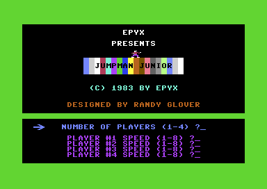
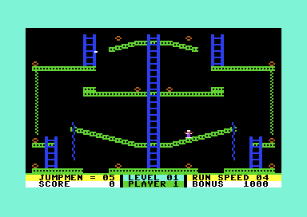

<meta charset="utf-8">
<meta name="viewport" content="width=device-width, initial-scale=1">
<title>{{title}}</title>
<link rel="preconnect" href="https://fonts.googleapis.com">
<link rel="stylesheet" href="https://fonts.googleapis.com/css2?family=Lato:wght@400;700;900&family=IBM+Plex+Mono:wght@400;500&display=swap">
<link rel="stylesheet" href="reference/jj-page.css">
<!-- tabs -->
<header class="hero">
  <p class="eyebrow">{{platform}} · {{year}} · {{publisher}}</p>
  <h1>{{title}}</h1>
  <p class="sub">Twelve levels of girders, ladders, and bombs, made smaller than Jumpman so that they would fit on a cartridge. The copy studied here is that cartridge, loaded from a disk, and it shows.</p>
</header>
<main class="wrap">
<section id="game">
  <h2 class="t">Bombs on Jupiter</h2>
  <p>Aliens called the Alienators have attacked the Jupiter Command Substation, “a valuable outpost of planet Earth”. Jumpman, “Jupiter's super secret agent”, is busy restoring communications, so the bombs fall to his apprentice, Jumpman Junior. He must defuse every bomb on the station's twelve levels “before they explode, crumbling the outpost instantly.”<sup class="fn"><a href="about.html#src-2" title="The instruction text">2</a></sup></p>
  <figure class="overview-shot"><figcaption>The title screen. The game has no loading picture: it goes straight here, and waits for the <a href="controls.html#keys">number of players and their run speeds</a>.</figcaption></figure>
  <p>Each level is a single screen. Jumpman walks the girders, climbs <a href="gameplay.html#floor">ladders and ropes</a>, and <a href="gameplay.html#jump">jumps</a>, and a level is cleared when he has touched every <a href="levels.html#bombs">bomb</a>. Bullets drift in from the edges and <a href="gameplay.html#bullets">turn on him</a> when he lines up with them, and a fall of more than a few pixels is the end of him. Each level adds something of its own: fires that move, ladders that slide up and down, stones that drop from above, a level drawn in the dark, and a <a href="levels.html#l12">hurricane</a> (<a href="levels.html#levels">all twelve</a>).</p>
  <figure class="overview-shot"><figcaption>Level 1, <a href="levels.html#l1">NOTHING TO IT</a>. Green is what he walks on, blue what he climbs, and orange the bombs: <a href="gameplay.html#floor">the colours are the map</a>.</figcaption></figure>
</section>

<section id="makers">
  <h2 class="t">The people behind the game</h2>
  <p>Randy Glover designed and programmed Jumpman Junior, and wrote its music; the title screen says DESIGNED BY RANDY GLOVER.<sup class="fn"><a href="about.html#src-2" title="The instruction text">2</a></sup> Epyx published it in 1983 for the Atari 8-bit computers and the Commodore 64, as a follow-up to Glover's Jumpman of the same year.<sup class="fn"><a href="about.html#src-1" title="Wikipedia, Jumpman Junior">1</a></sup> Jumpman had thirty levels; the new game was cut down to twelve, all of them new, so that it could be sold as a cartridge.<sup class="fn"><a href="about.html#src-1" title="Wikipedia, Jumpman Junior">1</a></sup></p>
  <p>Its code is not Jumpman's. A search of Jumpman's own code, <a href="../jumpman/index.html">explained on this site</a>, for any run of sixteen bytes of Jumpman Junior found only short common sequences. The cartridge's sixteen kilobytes hold the whole game: the engine, the twelve levels as <a href="levels.html#scripts">drawing scripts</a>, their own small routines, and <a href="music.html">ten tunes and nineteen sound effects</a>.</p>
  <p>The copy studied is a disk. It loads the cartridge's image into memory at <code>$8000</code>, copies the KERNAL ROM into the RAM under it with one byte patched, reads the first part of the game's code from a copy-protected track, and starts the cartridge as if it were plugged in (<a href="about.html#copy">the copy studied</a>). Jumpman Junior came back in 2004 on the C64 Direct-to-TV, a joystick with the games built in.<sup class="fn"><a href="about.html#src-1" title="Wikipedia, Jumpman Junior">1</a></sup></p>
</section>

<section id="reception">
  <h2 class="t">Reception on the Commodore 64</h2>
  <p>The magazine reviews of 1983 and 1984 that the sources name were of the Atari version, and none of the Commodore 64 version was found. The reviews of the C64 game that can be read are by players, written long after.</p>
  <p>Writing on HonestGamers in 2009, sashanan called it “an excellent platform game that would have certainly ranked with the best”, but for “a multitude of bugs” that brought it down “until it is merely above average”, and gave it 3.5 out of 5.<sup class="fn"><a href="about.html#src-3" title="HonestGamers, sashanan's review">3</a></sup> <a href="https://www.honestgamers.com/8119/commodore-64/jumpman-junior/review.html">Read the review on HonestGamers<span aria-hidden="true"> ↗</span></a>. A player review on MobyGames found it “slightly more difficult than its predecessor”, and warned that “real puzzle solvers may be disappointed” with only a dozen levels.<sup class="fn"><a href="about.html#src-4" title="MobyGames, Jumpman Junior's Commodore 64 reviews">4</a></sup></p>
</section>

<section id="explore">
  <h2 class="t">What is hidden in it</h2>
  <p>The code has a few things no player was told. On <a href="discoveries.html#speed-8">level 10 at run speed 8</a>, bullets cannot kill Jumpman. A score that passes a million wraps round, but the score for the next Jumpman does not, so <a href="discoveries.html#million">no more Jumpmen come</a>. And the cartridge was never meant to run from RAM: level 10 <a href="discoveries.html#cbm80">writes over the cartridge's signature</a> every time a bomb is defused, which a cartridge would never notice, and every turn the game <a href="discoveries.html#b2b3">checks a KERNAL pointer</a> that a copy started from BASIC would have set.</p>
  <p><a href="levels.html">Draw every level and defuse its bombs</a>, <a href="gameplay.html#jump">see the path of a jump</a>, or <a href="music.html">play the tunes and effects through the game's own sound code</a>.</p>
</section>
</main>
<footer style="margin:16px 0 0;padding:22px var(--gx) 0;border-top:1px solid #e0ded8;font-family:'IBM Plex Mono',ui-monospace,Menlo,monospace;font-size:12px;color:#80838a"><a href="https://github.com/gamesexplained/gamesexplained" style="color:#1f5fa8;text-decoration:none">GitHub</a> · <a href="https://discord.gg/3V9GWyRDWV" style="color:#1f5fa8;text-decoration:none">Discord</a><br>© Games Explained contributors. Write-ups, facts and symbol maps are available under <a href="https://creativecommons.org/licenses/by-sa/4.0/" style="color:#1f5fa8;text-decoration:none">CC BY-SA 4.0</a>; code under <a href="https://opensource.org/licenses/MIT" style="color:#1f5fa8;text-decoration:none">MIT</a></footer>
